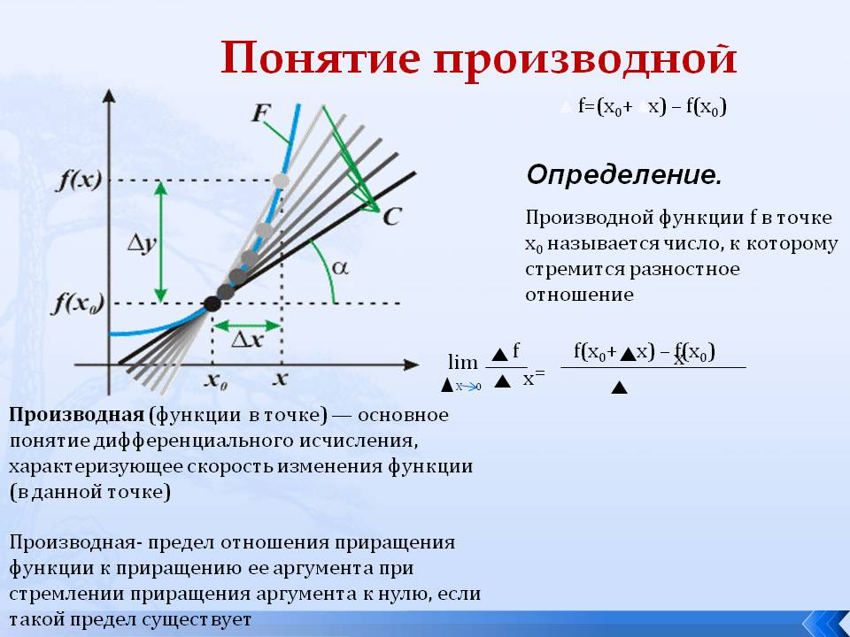
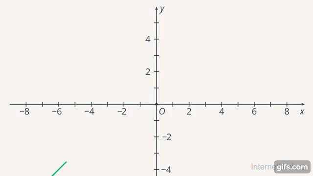
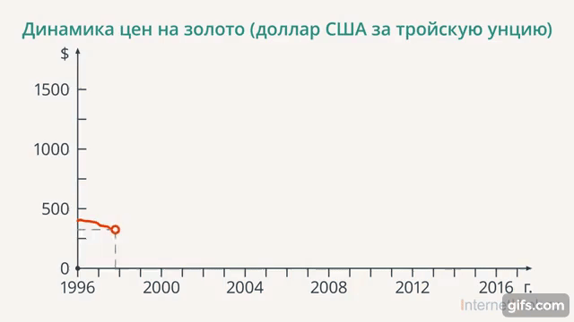
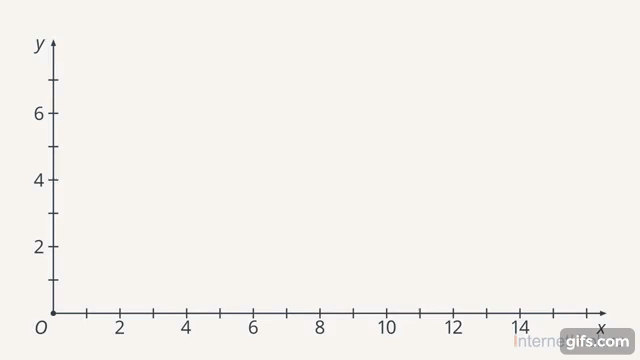

Сегодня мы будем говорить об исследовании функций. Важно отметить, что математика устроена так же, как и обычный дом: сначала закладывается фундамент, а потом уже слой за слоем выкладываются кирпичи. Роль фундамента в математике играет функция (соответствие между двумя множествами). После введения понятия функции ее начинают исследовать как объект аналогично тому, как это было сделано с числами.
На самом деле, в жизни мы тоже часто пользуемся не только объектами, но и соответствиями между ними, отношениями между объектами. В качестве примера можно привести книги о любви (любовь – это отношение между людьми).
После исследования функции в математике начинают исследовать множества функций, затем пространства функций и так далее. Но мы сегодня поговорим о первичном анализе функции.
Что такое функция? Функция – это соответствие между множествами. На данном уроке мы будем говорить о числовых функциях, то есть о соответствиях между числовыми множествами. Также мы поговорим о локальном свойстве функции (поведение функции в данной конкретной точке) и глобальном (свойство, связанное со всей областью определения функции). Производная – это описание локальных свойств функций, а интеграл – описание глобальных. Например, есть две разные функции, но в точке их графики совпадают. Но в чем же разница между поведением функций в окрестности этой точки? Об этом и пойдет речь.

По графику функции можно легко определить ее свойства: монотонность (функция возрастающая или убывающая), четность (нечетность) и периодичность

Все эти характеристики являются математическими. А вот производную часто используют в жизни. Чаще всего, когда мы описываем какой-то процесс с помощью графика, нас интересует динамика этого процесса, то есть не значение функции в конкретной точке, а как функция будет себя вести в дальнейшем (она будет расти или убывать?). Например, когда мы хотим проанализировать рост цен или сравнить цены за разные периоды времени (абсолютные значения могли измениться, а динамика осталась той же)

Рисунок показывает динамику цен на золото
Производная помогает выяснить, как функция будет себя вести в окрестности данной точки.
Стоит уточнить, что в школе чаще всего производную функции ищут на всей области определения. Это связано с тем, что исследуемые функции являются «хорошими», то есть их поведение предсказуемо на всей оси. Но вообще производная – локальная характеристика функции.
Например, при просмотре фотографий с разной выдержкой может быть несколько вариантов:
1)машины стоят и люди находятся каждый на своем месте
2)смазанная картинка, видно кто куда направляется
Второй вариант – это наглядная иллюстрация производной (размытие картинки).
В точке функция принимает конкретное значение, и по нему практически нельзя сделать какие-то выводы о ее поведении. А если рассмотреть окрестность этой точки, то уже можно сказать, с какой стороны она меньше (с какой больше) и сделать вывод, возрастает она или убывает. То есть когда выдержка маленькая, мы видим значение функции в точке, а когда рассматриваем задержку кадра – мы уже можем проанализировать поведение функции

На плоскости показана аналогия между производной и фотографией